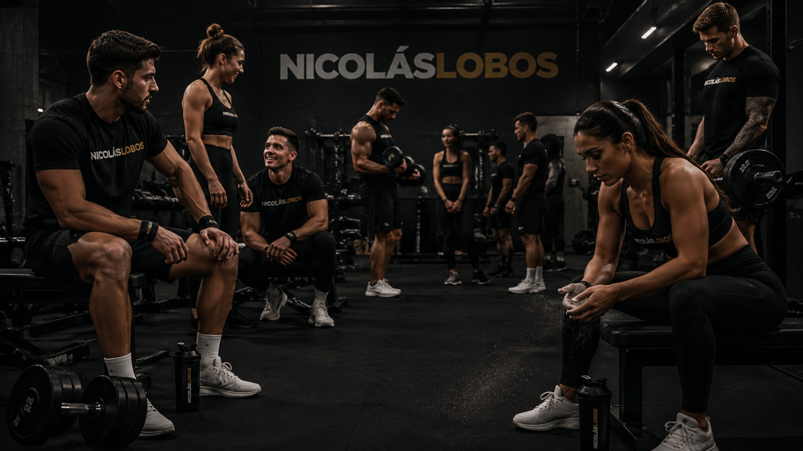

The Club
Un espacio para personas que valoran la constancia, el progreso y una comunidad que empuja en la misma dirección.

Members
Data & Performance
Constancia, análisis y progreso medible.
Strength Journey
Construcción de hábitos sostenibles.
Wellness Focus
Entrenamiento orientado a bienestar integral.
Attendance
Mario
Rafael
Constanza
María Teresa
Culture
Personas apoyando personas.
Actividades, desafíos y encuentros.
Porque los compañeros de cuatro patas también son parte del equipo.
Join The Club